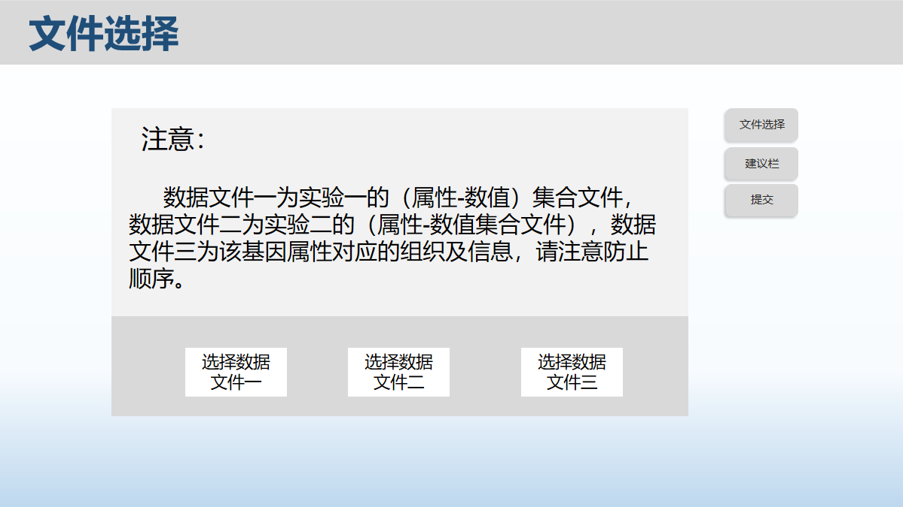
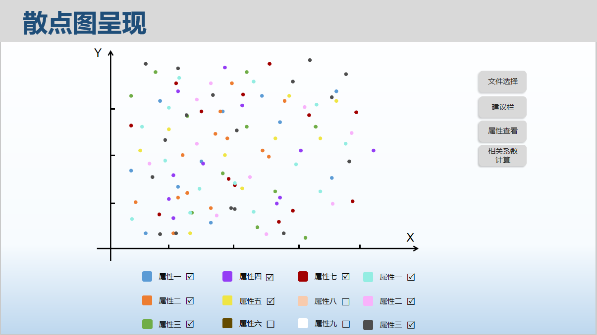
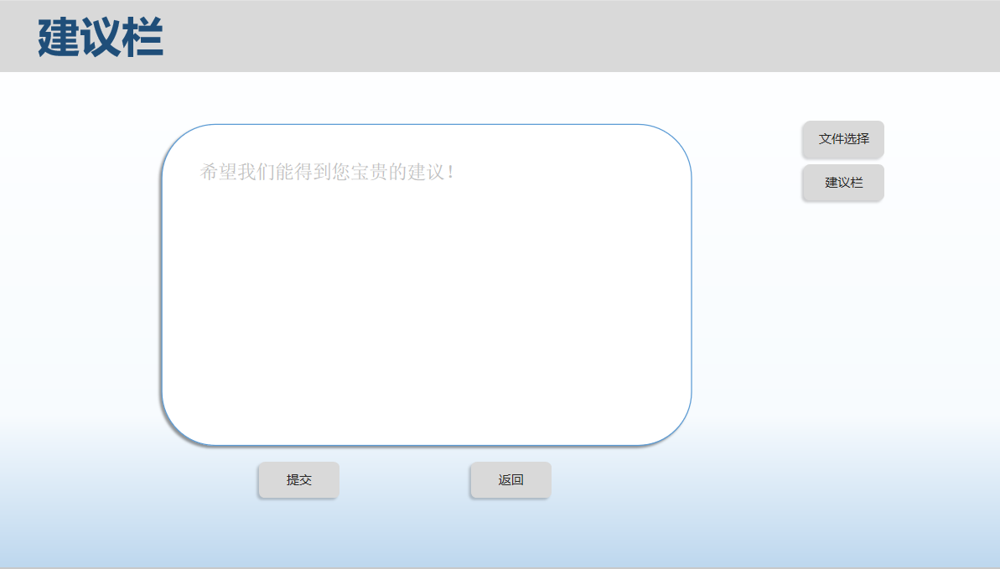

四、使用实例¶
4.1 文件选择页面¶
在打开页面之后，我们会先呈现一个用户选择数据的页面，在选择前，会有一个提示消息告知用户如何进行文件选择以及文件的要求信息。 在成功选择了三个文件后点击提交，就可以进行后台的数据处理，转到下面的散点图。
4.2 散点图呈现¶
4.2.1属性集合呈现¶
在成功提交文件之后，经过后台数据集合的处理后，会整理出各个数据集合点，每个集合都会有一个对应的颜色呈现在下方，每个集合里的点都会按照自己的坐标呈现在上方的X-Y直角坐标系中，并有自己对应的颜色，在属性后方会加上一个复选框，默认状态为所有的复选框均被勾选，图中会呈现出所有的点，而后可根据需要选择自己需要的复选框，点击右方的属性查看即可查看自己勾选的目标点。
4.2.2 相关系数计算¶
由于相关系数的计算关系到的是多个属性之间的相关性，故要严格选中两个属性的复选框后点击右边的“相关系数计算”按钮，则会在其下方显示“此两属性间的相关系数为 F(float) ”的字样。
4.3 建议栏¶
不管是否进行过散点图的呈现，用户都可以点击右边的建议栏进入该页面，进行意见建议的提出并上交，来以此帮助我们走的更远。
